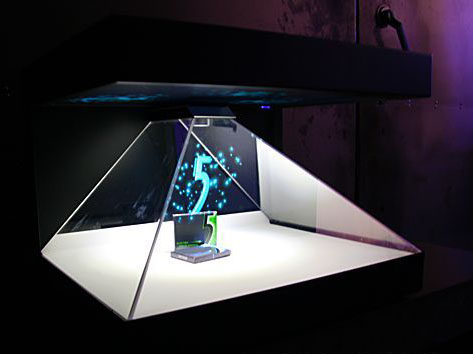

Кафедра
Комп'ютерних Наук та
Інформаційних Систем
Наші спеціальності
Комп'ютерні науки
Спеціальність дає можливість отримати ґрунтовні знання з сучасних інформаційних технологій.
Основною метою навчання є підготовка фахівців для розробки, впровадження і супроводу інформаційних систем та технологій, отримання знань із сучасних мов програмування, проектування, розроблення та супровід програмного забезпечення, надання послуг системного аналізу.
Дізнатись більшеІнформаційні системи і технології
Теоретичні та методологічні основи та інструментальні засоби створення і використання інформаційних систем та технологій, а також моделі, методи та засоби оптимізації та прийняття рішень при створенні й використанні інформаційних систем та технологій.
Дізнатись більшеНаші дослідження

Інформаційні технології для експлуатації голографічних 3D вітрин
Дізнатись більшеМоделювання механізмів функціонування міжнародної електронної торгівлі
Дізнатись більшеЄ питання?
Освіта за спеціальністю 122 «Комп’ютерні науки» надасть можливість успішного працевлаштування програмістом, прикладним чи системним програмістом, розробником програмного забезпечення, web-програмістом, адміністратором баз даних або мереж, системним адміністратором, аналітиком комп’ютерних мереж, проектувальником інформаційних систем, керівником IT-проектів, інженером-програмістом та ін.
Здатність до проектної діяльності в професійній сфері, будувати і застосовувати моделі для опису об’єктів та процесів, правильно й повно відображати результати професійної діяльності в технічній та інших документаціях, проводити аналіз об’єкта проектування та предметної області, розробляти та застосовувати моделі відображення знань, стратегії логічного виведення технологій і інструментальних засобів побудови інформаційних систем, використовувати сучасні технології проектування в розробці алгоритмічного та програмного забезпечення, проектувати, впроваджувати та експлуатувати сучасні ІСТ у різних галузях людської діяльності, управляти якістю продуктів та сервісів ІСТ, використовувати математичні та комп’ютерні методи та моделі для аналізу та оптимізації людської діяльності, використовувати серверні технології створення веб-додатків, уміння застосовувати методи та інструментальні засоби для їх проектування, розв’язувати проблеми масштабованості, підтримки віддалених компонентів в розподілених системах.
Магістр комп’ютерних наук здійснює професійну діяльність, спрямовану на розробку, модифікацію, експлуатацію, супровід та адміністрування розподілених інформаційних управляючих систем, проектування прикладного забезпечення на основі інформаційних технологій із застосуванням інструментальних засобів.
Python, C#, C++, Java, R, MS Excel, MS Access, Corel VideoStudio, TeXnicCenter, ARIS, ERwin, Rational Rose, AnyLogic, LaTeX, Netcracker та інші

 Дізнавайтесь більше, читайте
Дізнавайтесь більше, читайте